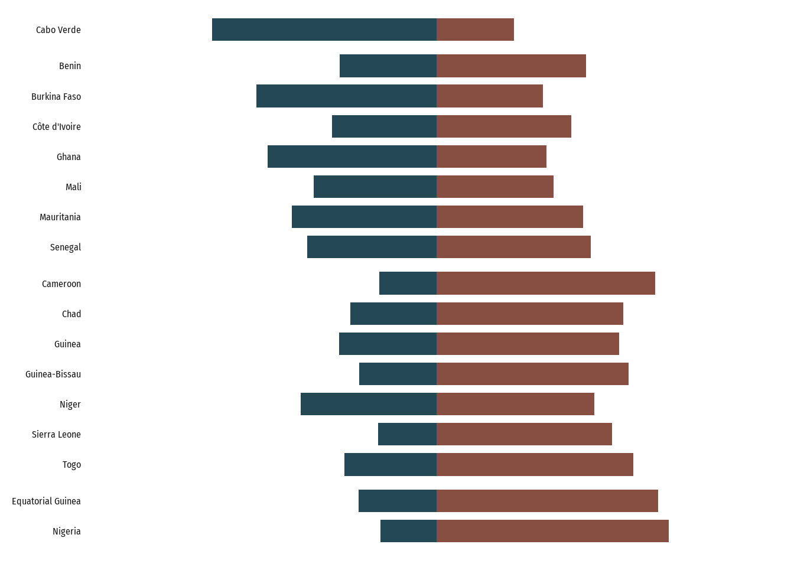
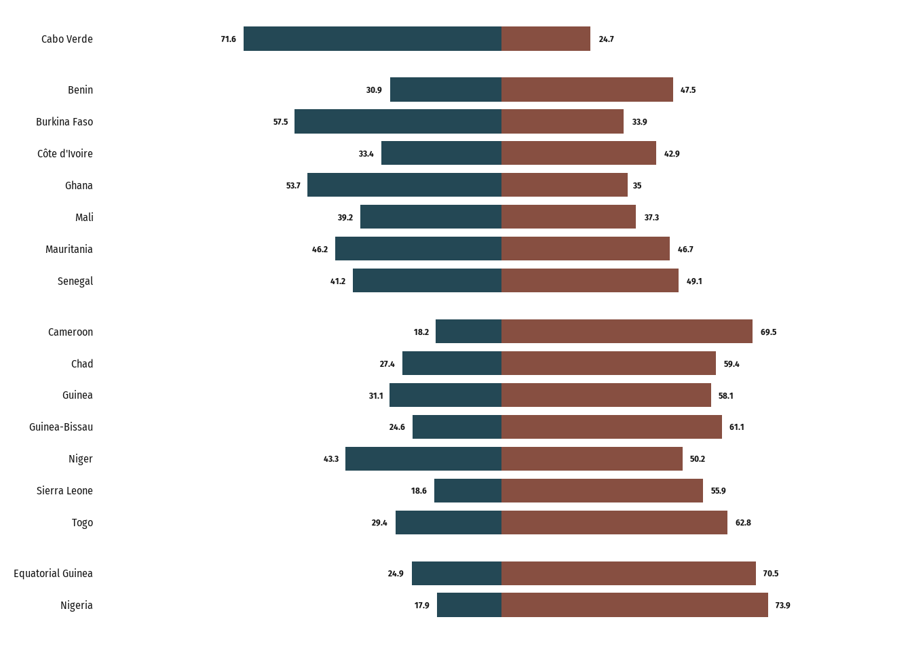
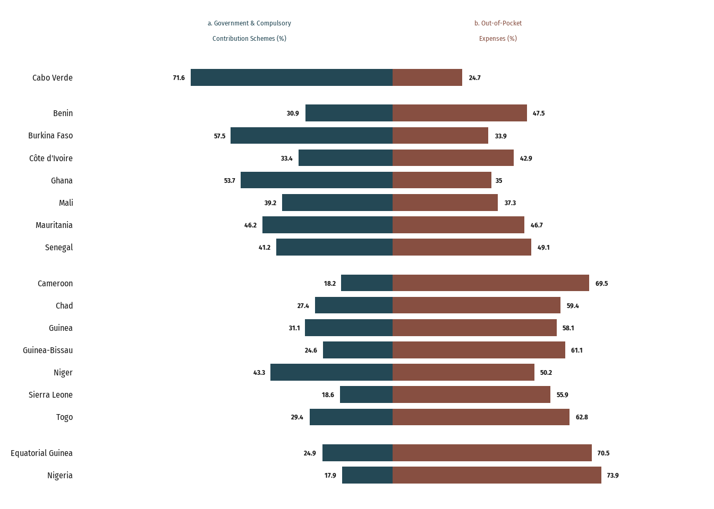
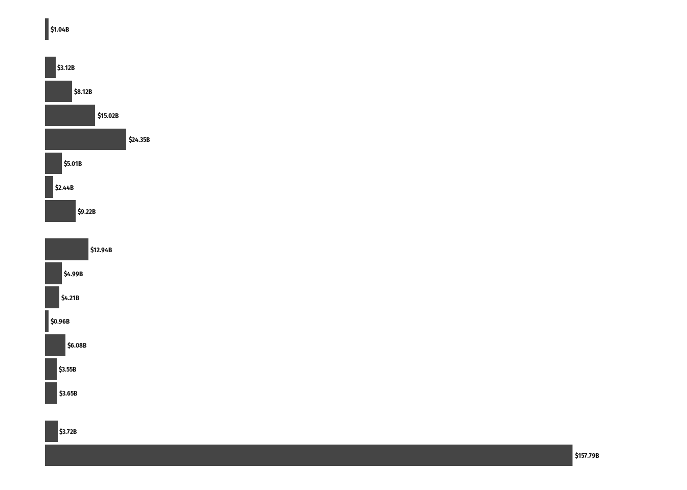
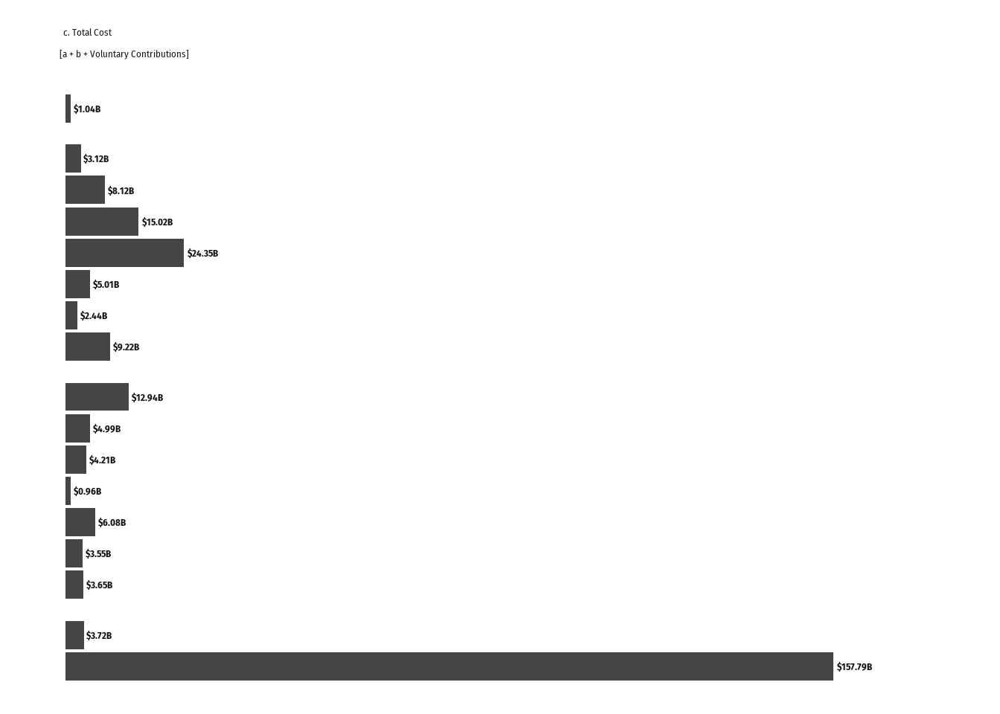
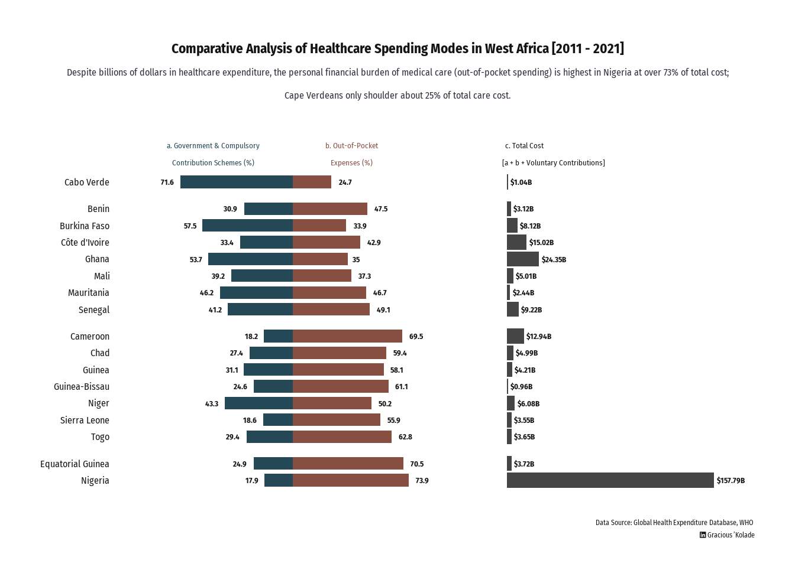

library(readxl) #...........read in data file
library(tidyverse) #.........data wrangling
library(janitor) #..........data wrangling
library(ggforce) #..........viz faceting
library(patchwork) #.......combine plots
library(ggthemes) #.........text csztomizations
library(ggtext) #.........text csztomizations
library(sysfonts) #.........generate viz fonts
library(showtext) #.........generate viz fonts
library(monochromeR) #.........viz colour selection
library(fontawesome)Comparative Analysis of Healthcare Funding Modes in West Africa
lubridate
Tidyverse
Understanding the trend of healthcare cost burden in West Africa
Now that you are here:
If you are here, that means only one thing: you are interested in understanding the R workflow for my ‘Healthcare Funding Modes in Africa’ project. So, let’s dive right into it.
Project Focus:
Conduct a comparative analysis of how healthcare is funded in Sub-Saharan West Africa.
A quick back story: I work in healthcare; and my interest revolves around understanding how finance, tech adoption and stakeholder behavior impact business operations.
To deliver a project I recently worked on, it was important that I understand how the financial burden of medical care is shared among three key stakeholders: patients, governments and care providers. This is what birth this project.
Project:
Why don’t you just find out for yourself; follow the workflow.
Dataset:
Global Health Expenditure Database, WHO
A. Load R Packages
B. Data Preparation
i. Data import
# Data Importfrom Excel sheet
datatable <- readxl::read_xlsx("NHA indicators.xlsx")
initial_table <- datatable %>%
slice(-1) %>%
pivot_longer(
cols = starts_with("20"),
names_to = "year",
values_to = "value",
values_transform = as.numeric,
names_transform = as.factor
) %>%
select(-...3)
head(initial_table)# A tibble: 6 × 4
Countries Indicators year value
<chr> <chr> <fct> <dbl>
1 Benin Current health expenditure by financing schemes 2011 320.
2 Benin Current health expenditure by financing schemes 2012 343.
3 Benin Current health expenditure by financing schemes 2013 359.
4 Benin Current health expenditure by financing schemes 2014 358.
5 Benin Current health expenditure by financing schemes 2015 311.
6 Benin Current health expenditure by financing schemes 2016 330.ii. Data Wrangling
wrangled_table <- initial_table %>%
# filter out current health expenditure by financing schemes
filter(!str_detect(Indicators, "Current")) %>%
group_by(Countries, Indicators) %>%
summarise(total = sum(value)) %>%
mutate(
percent = total / sum(total) * 100,
across(
where(is.numeric),
~ round(., 2)
# create 'spending class' variable using sum spending ranking
),
spend_class = case_when(
percent > 70 & Indicators == "Household out-of-pocket payments (OOPS)" ~ "Above 70",
percent < 30 & Indicators == "Household out-of-pocket payments (OOPS)" ~ "Below 30",
percent > 50 & Indicators == "Household out-of-pocket payments (OOPS)" ~ "50 - 70",
percent > 30 & Indicators == "Household out-of-pocket payments (OOPS)" ~ "30 - 50",
TRUE ~ " "
)
) %>%
# this part was a bit tricky.There should be a better way to do this
mutate(
oops_class = case_when(
spend_class != " " ~ spend_class,
spend_class == " " & lag(spend_class) != " " ~ lag(spend_class),
spend_class == " " & lead(spend_class) != " " ~ lead(spend_class),
TRUE ~ ""
)
) %>%
# group countries into 'spending class' using sum spending ranking
mutate(
oops_class = factor(oops_class,
levels = c(
"Below 30", "30 - 50",
"50 - 70", "Above 70"
), ordered = TRUE
)
) %>%
# drop spending class variable
select(-spend_class)
head(wrangled_table)# A tibble: 6 × 5
# Groups: Countries [2]
Countries Indicators total percent oops_class
<chr> <chr> <dbl> <dbl> <ord>
1 Benin Government schemes and compulsory contr… 1228. 30.9 30 - 50
2 Benin Household out-of-pocket payments (OOPS) 1890. 47.5 30 - 50
3 Benin Voluntary health care payment schemes 859. 21.6 30 - 50
4 Burkina Faso Government schemes and compulsory contr… 5108. 57.5 30 - 50
5 Burkina Faso Household out-of-pocket payments (OOPS) 3013. 33.9 30 - 50
6 Burkina Faso Voluntary health care payment schemes 769. 8.65 30 - 50 C. Prepare for Data Vizualization
i. Compute Midpoints
This workflow is important for the selected viz option: a divergent bar chart.
# Prepare Table For Vizualization
viz_table <- wrangled_table %>%
# filter out the voluntary contribution rows
filter(!str_detect(Indicators, "Voluntary"))# Compute Midpoints for Data viz - a perequisite for creating divergent bar chart
midpoint_data <- viz_table %>%
mutate(
middle_shift = percent[1],
lagged_percentage = lag(percent, default = 0),
left = cumsum(lagged_percentage) - middle_shift,
right = cumsum(percent) - middle_shift,
middle_point = (left + right) / 2,
width = right - left
)
head(midpoint_data)# A tibble: 6 × 11
# Groups: Countries [3]
Countries Indicators total percent oops_class middle_shift lagged_percentage
<chr> <chr> <dbl> <dbl> <ord> <dbl> <dbl>
1 Benin Governmen… 1228. 30.9 30 - 50 30.9 0
2 Benin Household… 1890. 47.5 30 - 50 30.9 30.9
3 Burkina Fa… Governmen… 5108. 57.5 30 - 50 57.5 0
4 Burkina Fa… Household… 3013. 33.9 30 - 50 57.5 57.5
5 Cabo Verde Governmen… 772. 71.6 Below 30 71.6 0
6 Cabo Verde Household… 266. 24.7 Below 30 71.6 71.6
# ℹ 4 more variables: left <dbl>, right <dbl>, middle_point <dbl>, width <dbl>ii. Declare dependencies and load fonts
font_add_google("Roboto", "roboto")
font_add_google("Fira Sans Condensed", "fira")
font_add('fa-brands', 'fonts/font_inner/otfs/Font Awesome 6 Brands-Regular-400.otf')
showtext_auto()
github_icon <- ""
github_username <- "Gracious 'Kolade"
# Set Viz Colours
component_colours1 <- c(
"Government schemes and compulsory contributory health care financing schemes"= "#244855",
"Household out-of-pocket payments (OOPS)"= "#874f41" )
viz_colours <- tibble(txt_col = "#141414",
numcol = "#141414",
bar_col = "#454545",
bar_col1 = "#282C35",
title_col= "#141414",
subtitle_col ="#2C2E3A"
)
#Declare plot titles
plot_titles <- tibble(
maintitle = "Comparative Analysis of Healthcare Spending Modes in West Africa [2011 - 2021]",
subtitle = "Despite billions of dollars in healthcare expenditure, the personal financial burden of medical care (out-of-pocket spending) is highest in Nigeria at over 73% of total cost;\nCape Verdeans only shoulder about 25% of total care cost.",
caption = "Data Source: Global Health Expenditure Database, WHO <br><span style='font-family:fa-brands'></span> Gracious 'Kolade"
)
# Set other dependencies
barwidth <- 0.75D. Data Viz.
i. Create baseplot
# Baseplot
baseplot <- midpoint_data %>%
ggplot() +
geom_tile(
aes(
x = middle_point,
y = fct_rev(as_factor(Countries)),
width = width,
fill = Indicators),
height = barwidth) +
# facet data categories
ggforce::facet_col(
facets = vars(oops_class),
scales = "free_y",
space = "free") +
scale_fill_manual(
values = component_colours1) +
# Set scale limits on x-axis
scale_x_continuous(
breaks = seq(-100, 100, by = 20), limits = c(-100, 100)) +
theme_minimal(base_family = "fira", base_size = 15) +
# set theme
theme(
text = element_text(colour = viz_colours$numcol),
legend.position = "none",
axis.title = element_blank(),
axis.text.x = element_blank(),
panel.grid = element_blank(),
strip.text = element_blank(),
panel.spacing = unit(0, "pt"), # reduce facet panel spacing
axis.text.y = element_text(colour = viz_colours$numcol)
)
baseplot
ii. Add percentage labels to baseplot
# Add labels to plot segments
baseplot_with_labels <- baseplot +
#Add percentage labels on right bars
geom_text(
data = midpoint_data %>%
filter(str_detect(Indicators, "out-of-pocket")),
aes(
x = right,
y = Countries,
label = round(percent, 1)
),
size = 3.5,
color = viz_colours$numcol,
family = "fira",
fontface = "bold",
hjust = -0.5
) +
#Add percentage labels on left bars
geom_text(
data = midpoint_data %>%
filter(str_detect(Indicators, "Government schemes")),
aes(
x = left,
y = Countries,
label = round(percent, 1),
),
size = 3.5,
color = viz_colours$numcol,
family = "fira",
fontface = "bold",
hjust = 1.5
) +
scale_y_discrete(
expand = expansion(
add = .8
)
)
baseplot_with_labels
iii. Add category label to divergent bars
# clean labels
label_guide <- c(
"Government schemes and compulsory contributory health care financing schemes" = "a. Government & Compulsory\nContribution Schemes (%)",
"Household out-of-pocket payments (OOPS)" = "b. Out-of-Pocket\nExpenses (%)"
)
firstbaseplot_category_labels <- baseplot_with_labels +
#Notice how labels are forced on the first bar.
geom_text(
data = midpoint_data %>%
filter(Countries == "Cabo Verde"),
aes(
x = middle_point + c(-15, 25),
y = Countries,
label = label_guide
),
# Adjust label appearance
nudge_y = 3,
colour = component_colours1,
size = 3.5,
family = "fira",
fontface = "plain",
vjust = 1.5,
lineheight = .9,
)
firstbaseplot_category_labels
E. Create a Second Plot
i. Prepare data
# Data Preparation for a 'Total Spend' Plot
total_spending <- midpoint_data %>%
ungroup() %>%
group_by(Countries) %>%
summarise(total_healthcare_spending = sum(total))
total_spend_table <- total_spending %>%
# Not the best of method
mutate(
oops_class = c(
"30 - 50",
"30 - 50",
"Below 30",
"50 - 70",
"50 - 70",
"30 - 50",
"Above 70",
"30 - 50",
"50 - 70",
"50 - 70",
"30 - 50",
"30 - 50",
"50 - 70",
"Above 70",
"30 - 50",
"50 - 70",
"50 - 70"
),
oops_class = factor(oops_class,
levels = c(
"Below 30", "30 - 50",
"50 - 70", "Above 70"
), ordered = TRUE
)
)
head(total_spend_table)# A tibble: 6 × 3
Countries total_healthcare_spending oops_class
<chr> <dbl> <ord>
1 Benin 3117. 30 - 50
2 Burkina Faso 8121. 30 - 50
3 Cabo Verde 1038. Below 30
4 Cameroon 12936. 50 - 70
5 Chad 4986 50 - 70
6 Côte d'Ivoire 15021. 30 - 50 ii. Plot second baseplot
# Second Baseplot (Sum Plot)
second_baseplot <- total_spend_table %>%
ggplot() +
geom_col(
aes(
y = fct_rev(as_factor(Countries)),
x = total_healthcare_spending,
),
fill = viz_colours$bar_col
) +
ggforce::facet_col(
facets = vars(oops_class),
scales = "free_y",
space = "free",
) +
theme_minimal(base_size = 15) +
geom_text(
aes(
y = fct_rev(as_factor(Countries)),
x = total_healthcare_spending,
label = paste0("$", (round(total_healthcare_spending / 1000, 2)), "B")
),
size = 3.5,
hjust = -0.1,
color = viz_colours$numcol,
fontface = "bold",
family = "fira"
) +
theme(
axis.title = element_blank(),
axis.text.x = element_blank(),
panel.grid = element_blank(),
strip.text = element_blank(),
panel.spacing = unit(0, "pt"),
axis.text.y = element_blank(),
) +
#Adjust plot scale for easy readability
scale_x_continuous(
breaks = seq(0, 180000, by = 20000),
limits = c(-0, 180000)
) +
# Add a separating space for each spend class facet along the y-axis
scale_y_discrete(
expand = expansion(
add = 0.8
)
)
second_baseplot
iii. Add category label
secondbaseplot_category_labels <- second_baseplot +
geom_text(
data = total_spend_table %>%
filter(Countries == "Cabo Verde"),
aes(
x = 0,
y = Countries,
label = "c. Total Cost\n[a + b + Voluntary Contributions]"
),
nudge_y = 3,
size = 3.5,
family = "fira",
fontface = "plain",
vjust = 1.5,
hjust = .05,
lineheight = .9,
color = viz_colours$txt_col
)
secondbaseplot_category_labels
F. Combine Both Plots
finalplot <- firstbaseplot_category_labels + secondbaseplot_category_labels +
plot_layout(
ncol = 2,
width = c(2, 1.5)
) +
plot_annotation(
title = plot_titles$maintitle,
subtitle = plot_titles$subtitle,
caption = plot_titles$caption,
theme =
theme(
text = element_text(colour = viz_colours$txt_col,
family = "fira"),
plot.title = element_text(colour = viz_colours$title_col,
size = 17,
hjust = 0.5,
margin = margin(10,0,6,0),
#TRouBLe (Top, Right, Bottom, Left)
face = "bold"),
plot.caption = element_markdown(),
plot.subtitle = element_text(size = 12,
vjust = 3,
hjust = 0.5,
lineheight = 1,
margin = margin(5,0,10,0),
colour = viz_colours$subtitle_col
),
plot.margin = margin(rep(18,4)),
plot.background = element_rect(fill= "white")
)
)
finalplot
G. Save and Export Plot
ggsave(
filename = "finalplot.png",
width = 12,
height = 7.5,
dpi = 100,
bg = "#FFFFFF"
)If you have an idea on how I could have improved a workflow within the project, kindly reach out.